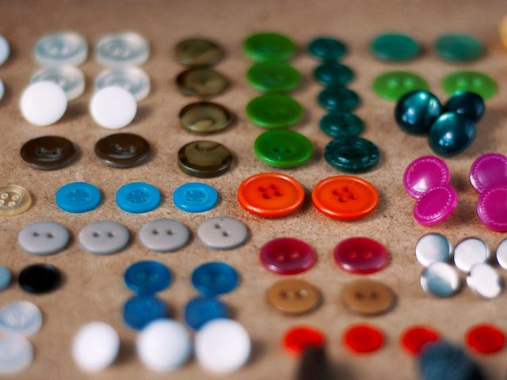
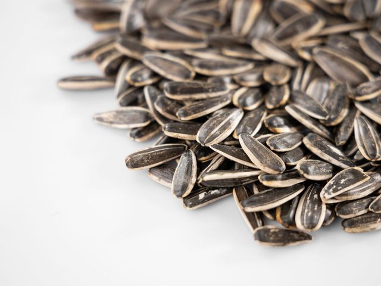
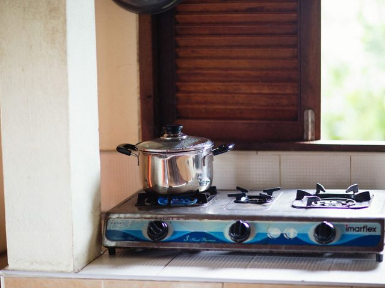
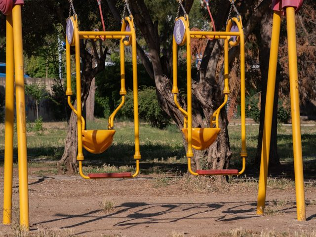

VOCABULARY · LALA WORD UNIT 14
Getting Lazy with Technology．一字多義（十四）
button 是按鈕，也是「鈕扣」；key 是鑰匙，也是「關鍵」。這個單元有 5 個主題單字、14 個更多單字，再整理 cross／across，和都是「帶」的 take／bring／carry。
共 19 個單字．點 🔊 聽發音

1buttonn. / v.
按鈕；鈕扣；扣上（鈕扣）
button - buttoned - buttoned - buttoning
- 1n.按鈕 press / push the button 按按鈕Press the red button to start.按紅色按鈕開始。
- 2n.鈕扣 do up / undo the buttons 扣上／解開扣子A button fell off my shirt.我襯衫掉了一顆扣子。
- 3v.扣上（鈕扣） button up 扣好Button up your coat. It's windy.把外套扣好，風很大。

2noten. / v.
筆記；便條；音符；語氣；記下；注意
note - noted - noted - noting
- 1n.筆記 take notes 做筆記Take notes during the class.上課時要做筆記。
- 2n.便條 leave a note 留便條Mom left a note on the fridge.媽媽在冰箱上留了一張便條。
- 3n.音符；語氣She can sing very high notes.她能唱很高的音。
- 4v.記下；注意 note down 記下Please note down my phone number.請把我的電話記下來。
3typev. / n.
打字；類型；字型；字體
type - typed - typed - typing
- 1v.打字My sister can type very fast.我姊姊打字很快。
- 2n.類型 blood type 血型What type of movies do you like?你喜歡哪一類的電影？
- 3n.字型；字體The type on this sign is too small.這個牌子上的字太小了。

4screenn. / v.
螢幕；放映；播出；篩選；檢查
screen - screened - screened - screening
- 1n.螢幕 screen time 使用螢幕的時間；touch screen 觸控螢幕Don't look at the screen too long.不要盯著螢幕太久。
- 2v.放映；播出The movie will be screened next week.這部電影下星期上映。
- 3v.篩選；檢查All bags are screened at the airport.機場會檢查所有行李。

5seedn. / v.
種子；播種；去籽
seed - seeded - seeded - seeding
- 1n.種子 plant a seed 播種Plant the seeds in the spring.春天把種子種下去。
- 2v.播種The farmer seeded the field with corn.農夫在田裡播了玉米種子。
- 3v.去籽Seed the peppers before you cook them.煮之前先把辣椒去籽。

6arean.
地區；區域；領域；方面；面積
複數 areas
- 1n.地區；區域 area code 區碼There are many parks in this area.這個地區有很多公園。
- 2n.領域；方面Math is her best area.數學是她最強的領域。
- 3n.面積What is the area of this room?這個房間的面積是多少？

7dropv. / n.
掉落；下降；放棄；停止；一滴；少量
drop - dropped - dropped - dropping
- 1v.掉落I dropped my phone on the floor.我的手機掉到地上。
- 2v.下降The temperature dropped to 12°C.氣溫降到十二度。
- 3v.放棄；停止 drop out 中途退出Let's drop the subject.我們別再談這件事了。
- 4n.一滴；少量 eye drops 眼藥水Just a drop of milk, please.請加一點點牛奶就好。

8gaten.
大門；登機門
複數 gates
- 1n.大門Let's meet at the school gate.我們在校門口碰面吧。
- 2n.登機門Our flight leaves from Gate 12.我們的班機從十二號登機門出發。

9gluen. / v.
膠水；用膠黏；盯著（be glued to）
glue - glued - glued - gluing
- 1n.膠水I need some glue for my art project.我的美勞作業需要膠水。
- 2v.用膠黏Glue the picture onto the card.把圖片黏到卡片上。
- 3v.盯著（be glued to） be glued to 全神貫注盯著He was glued to the TV all night.他整晚盯著電視看。

10honeyn.
蜂蜜；親愛的
- 1n.蜂蜜I put some honey in my tea.我在茶裡加了一些蜂蜜。
- 2n.親愛的Honey, dinner is ready.親愛的，晚餐好了。

11keyn. / v.
鑰匙；關鍵；音調；用鍵盤輸入
key - keyed - keyed - keying
- 1n.鑰匙 key chain 鑰匙圈I can't find my keys.我找不到我的鑰匙。
- 2n.關鍵 the key to …的關鍵；key word 關鍵字Practice is the key to success.練習是成功的關鍵。
- 3n.音調This song is in a high key.這首歌的調很高。
- 4v.用鍵盤輸入 key in 輸入Key in your password.輸入你的密碼。

12landn. / v.
陸地；土地；國家；國度；著陸；降落；得到；贏得
land - landed - landed - landing
- 1n.陸地；土地The sailors were happy to see land.水手們很高興看到陸地。
- 2n.國家；國度Taiwan is a land of beautiful mountains.臺灣是一片山景美麗的土地。
- 3v.著陸；降落The plane will land in ten minutes.飛機十分鐘後降落。
- 4v.得到；贏得She landed a part in the school play.她在學校話劇中拿到了一個角色。

13listv. / n.
列出；名單；清單
list - listed - listed - listing
- 1v.列出List three things you are thankful for.列出三件你感謝的事。
- 2n.名單；清單 to-do list 待辦清單I made a shopping list.我寫了一張購物清單。
14packv. / n.
打包；收拾行李；擠滿；一包；一副；一群（動物）
pack - packed - packed - packing
- 1v.打包；收拾行李 pack up 收拾好Pack your bag tonight.今晚把包包整理好。
- 2v.擠滿 be packed with 擠滿The MRT was packed with people.捷運擠滿了人。
- 3n.一包；一副 a pack of cards 一副撲克牌I bought a pack of gum.我買了一包口香糖。
- 4n.一群（動物）A pack of dogs ran down the street.一群狗沿著街跑過去。

15pastev. / n.
貼上；（電腦）貼上；漿糊；糊狀物
paste - pasted - pasted - pasting
- 1v.貼上Paste the picture in your notebook.把圖片貼在你的筆記本上。
- 2v.（電腦）貼上 copy and paste 複製貼上Copy the link and paste it here.把連結複製貼到這裡。
- 3n.漿糊；糊狀物 toothpaste 牙膏Squeeze some toothpaste onto your brush.在牙刷上擠一點牙膏。

16pipen.
管子；菸斗
複數 pipes
- 1n.管子Water is coming out of the broken pipe.水從破掉的管子流出來。
- 2n.菸斗The old sailor smoked a pipe.那位老水手抽菸斗。

17potn. / v.
鍋；壺；罐；把…種在盆裡
pot - potted - potted - potting
- 1n.鍋；壺；罐 hot pot 火鍋；teapot 茶壺Mom is cooking soup in a big pot.媽媽用大鍋煮湯。
- 2v.把…種在盆裡Let's pot these little plants.我們把這些小植物種進盆裡吧。

18programn. / v.
電腦程式；節目；計畫；課程；寫程式；設定
program - programmed - programmed - programming
- 1n.電腦程式Download this program to edit photos.下載這個程式來修圖。
- 2n.節目My favorite TV program is on at eight.我最喜歡的電視節目八點播出。
- 3n.計畫；課程Our school has an exchange program.我們學校有交換學生計畫。
- 4v.寫程式；設定He programmed the robot to dance.他寫程式讓機器人跳舞。

19swingv. / n.
擺動；盪；揮動；（心情）轉變；變化；鞦韆
swing - swung - swung - swinging
- 1v.擺動；盪 swing by 順道去The kids are swinging in the park.孩子們在公園盪鞦韆。
- 2v.揮動Swing the bat hard!用力揮棒！
- 3v.（心情）轉變Her mood swings from happy to sad quickly.她的心情很快就從開心變難過。
- 4n.變化There was a big swing in temperature today.今天溫差很大。
- 5n.鞦韆Let's take turns on the swing.我們輪流盪鞦韆吧。
FOCUS
易混淆字：cross 和 across
| 單字 | 用法 | 例句 |
|---|---|---|
| cross | （動詞）穿越；橫越；交叉 | Look both ways before you cross the street. |
| across | （介系詞、副詞）在…的對面；橫越 | The bank is across from the school.／We walked across the bridge. |
cross 是動作本身；across 要配動詞（walk across、swim across）。
FOCUS
易混淆字：take／bring／carry
| 單字 | 用法 | 例句 |
|---|---|---|
| take | 帶去：從說話者這裡帶到別的地方 | Take an umbrella with you. |
| bring | 帶來：帶到說話者這裡 | Bring your homework tomorrow. |
| carry | 搬、提、背：強調「拿著移動」的動作 | He carried the heavy box upstairs. |
FOCUS
一字多義：最常見 vs. 容易忽略的意思
| 單字 | 最常見的意思 | 容易忽略的意思 |
|---|---|---|
| button | 按鈕 | 鈕扣 |
| note | 筆記 | 便條；音符 |
| screen | 螢幕 | 放映；檢查 |
| key | 鑰匙 | 關鍵；音調 |
| land | 陸地 | 降落；得到 |
| pack | 打包 | 一包；一群 |
| honey | 蜂蜜 | 親愛的 |
| swing | 擺動 | 鞦韆 |